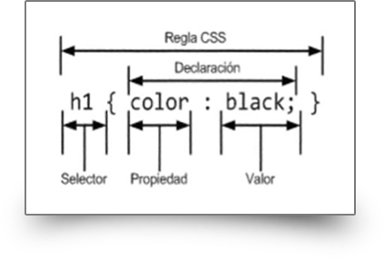

Hojas de Estilo en Cascada CSS y Frameworks CSS
Las páginas web necesitan ser visualmente atractivas y funcionales. Anteriormente internet se usaba solo para consultar documentación pero hoy en día las páginas web no son solo informativas sino que llegan a ser completas apps que reemplazan muchas veces a las apps de escritorio.
Para darle una apariencia adecuada y acomodar los elementos web de una manera correcta se usa la tecnología de Hojas de Estilo en Cascada (CSS).
CSS (siglas en inglés de Cascading Style Sheets), en español «Hojas de estilo en cascada», es un lenguaje de diseño gráfico para definir y crear la presentación de un documento estructurado escrito en un lenguaje de marcado.2 Es muy usado para establecer el diseño visual de los documentos web, e interfaces de usuario escritas en HTML o XHTML; el lenguaje puede ser aplicado a cualquier documento XML, incluyendo XHTML, SVG, XUL, RSS, etcétera. Junto con HTML y JavaScript, CSS es una tecnología usada por muchos sitios web para crear páginas visualmente atractivas, interfaces de usuario para aplicaciones web y GUIs para muchas aplicaciones móviles (como Firefox OS).
CSS está diseñado principalmente para marcar la separación del contenido del documento y la forma de presentación de este, características tales como las capas o layouts, los colores y las fuentes. Esta separación busca mejorar la accesibilidad del documento, proveer más flexibilidad y control en la especificación de características presentacionales, permitir que varios documentos HTML compartan un mismo estilo usando una sola hoja de estilos separada en un archivo .css, y reducir la complejidad y la repetición de código en la estructura del documento.
La separación del formato y el contenido hace posible presentar el mismo documento marcado en diferentes estilos para diferentes métodos de renderizado, como en pantalla, en impresión, en voz (mediante un navegador de voz o un lector de pantalla), y dispositivos táctiles basados en el sistema Braille. También se puede mostrar una página web de manera diferente dependiendo del tamaño de la pantalla o tipo de dispositivo. Los lectores pueden especificar una hoja de estilos diferente, como una hoja de estilos CSS guardado en su computadora, para sobreescribir la hoja de estilos del diseñador.
La especificación CSS describe un esquema prioritario para determinar qué reglas de estilo se aplican si más de una regla coincide para un elemento en particular. Estas reglas son aplicadas con un sistema llamado de cascada, de modo que las prioridades son calculadas y asignadas a las reglas, así que los resultados son predecibles.
La especificación CSS es mantenida por el World Wide Web Consortium (W3C). El MIME type text/css está registrado para su uso por CSS descrito en el RFC 2318.5 El W3C proporciona una herramienta de validación de CSS gratuita para los documentos CSS.
Sintaxis
CSS tiene una sintaxis simple y usa un conjunto de palabras clave en inglés para especificar los nombres de varias propiedades de estilo. Una hoja de estilos consiste en una serie de reglas. Cada regla, o conjunto de reglas consisten en uno o más selectores, y un bloque de declaración.
Selectores
Los selectores declaran qué etiquetas se le aplican a los estilos que coincidan con la etiqueta o atributo señalados en la regla.
Los selectores pueden aplicarse a:
- Todos los elementos de un tipo, como los párrafos
-
Elementos seguidos de un atributo, en particular:
- id: identificador, un identificador único para la etiqueta.
- class: clase, un identificador para anotar múltiples elementos.
Las clases y los identificadores son sensibles a las mayúsculas, comienzan con letras, y pueden incluir caracteres alfanuméricos y guiones bajos. Una clase se aplica a cualquier número de elementos. Un identificador se aplica a un solo elemento.
Bloque de declaraciones
Un bloque de declaraciones consiste en una lista de declaraciones unidas. Cada declaración consiste en una propiedad, dos puntos (:), y un valor. Si hay muchas declaraciones en un bloque, un punto y coma (;) es insertado para separar cada declaración.
Uso
Antes del desarrollo de CSS, toda la información presentacional de los documentos HTML era incluida en el código HTML. Los colores de las fuentes, los estilos de fondo, la alineación de los elementos, los bordes y tamaños eran descritos explícitamente, a veces de manera redundante, dentro del HTML. CSS permite a los diseñadores mover toda la información presentacional a otro archivo, la hoja de estilos, resultando en un código HTML notablemente más simple.
 Por ejemplo, aplicando estilos mediante etiquetas presentacionales HTML, un elemento h1 definido con texto rojo se puede representar como:
<h1><span style="color:red;"> Capítulo 1. </span></h1>
<h1 style="color: red;"> Capítulo 1. </h1>
<link href="hojadeestilos.css" rel="stylesheet" type="text/css" />
<tstyle>
h1 {color: red}
</style>
Los Frameworks CSS
Se han desarrollado soluciones para manejar los estilos de las páginas web de forma mas sencilla. Actualmente no es necesario diseñar un tema para un sitio web desde cero, ya que existen los frameworks CSS o marcos de trabajo CSS que vienen con estilos predeterminados y unas clases que nos permiten aplicar esos estilos de manera fácil a cualquier elemento.
En esta colección vamos a incluir los frameworks CSS actuales más importantes, los más usados por la comunidad y que ofrecen un estilo de desarrollo moderno.
Lo cierto es que la idea de framework CSS ya viene de lejos y llevan con nosotros más de una década, pero en la actualidad pocos son los frameworks que pueden competir en el mercado, ya que este tipo de herramientas ha evolucionado mucho, junto con el propio lenguaje, y se han hecho muy completos y sofisticados.
Bootstrap
Es el framework CSS más popular, en 2020, usado en infinidad de proyectos de todo tipo. Cuando apareció creó una tendencia de frameworks basados en componentes, capaces de implementar temas de diseño completos y complejos, aportando mucha sencillez y agilidad al desarrollo CSS y dotando a los programadores de herramientas para crear diseños consistentes con poco esfuerzo.
Durante sus años de existencia ha evolucionado mucho, incorporando novedades del estándar de CSS con rapidez y eliminando dependencias pesadas como jQuery que a día de hoy es innecesario en la mayoría de los proyectos.
Es muy común que las solicitudes de empleo se pida Bootstrap, ya que es una herramienta usada por muchas empresas.
Ir a la página oficial de BootstrapMaterialize CSS
Materialize es un framework CSS que implementa el tema de diseño "Material Design". Ofrece componetes material listos para usar, que se pueden integrar de una manera cómoda en los sitios web, consiguiendo un diseño guiado por las directrices de aplicaciones y sitios de Google
.Crea diseños consistentes que son fáciles de entender y familiares para los usuarios en general. Tiene muchos componentes que también implementan comportamientos dinámicos con Javascript y recientemente se actualizó para eliminar su dependencia con jQuery.
El framework es sencillo de usar, relativamente ligero, permite optimización y los componentes están altamente personalizados en su diseño.
Ir a la página oficial de Materialize CSSTailwind CSS
Este es un framework CSS que ofrece un enfoque diferente que otros como Bootstrap. Tailwind CSS en realidad no tiene muchos componentes, sino clases de utilidad que aplicar directamente sobre el CSS. Estos frameworks se llaman también "utility first" y ofrecen estilos CSS atómicos. Aunque también permite crear componentes, lo deja más del lado del desarrollador, que los podrá personalizar a su gusto.
Tailwind CSS tiene la característica de se muy maleable y adaptarse muy bien a lo que el desarrollador necesite. Con el framework puedes hacer builds de clases CSS totalmente personalizadas, que se parezcan o no a las que se ofrecen de manera predeterminada.
Ir a la página oficial de Tailwind CSSFoundation
Con Bootstrap y Materialize, Foundation es uno de los frameworks CSS basados en componentes más importantes del momento. Tiene muchos seguidores y mantiene una base de código que se actualiza con frecuencia para incorporar las novedades de CSS.
A diferencia de otros frameworks CSS ofrece un subset de sus herramientas orientado a la creación de emails, que tienen características de desarrollo distintos que los sitios web. Ofrece un set de herramientas para poder optimizarlo correctamente y construir un build que incluya solamente los componentes que se desean.
Ir a la página oficial de FoundationBulma
Este es un framework CSS basado en componentes que usa Flexbox de manera precisa para simplicidad del código.
Los componentes de Bulma son CSS puros, es decir, no tiene el set de componentes que requieren Javascript para funcionar. No obstante, tiene un montón de extensiones que sí incluyen componentes de todo tipo, dinámicos y con Javascript, usando varios frameworks, creados por terceros. Es sencillo de usar y de aprender y permite un desarrollo moderno.
Ir a la página oficial de BulmaReferencias
- Varios autores. Hoja de estilos en cascada. Wikipedia.com. https://es.wikipedia.org/wiki/Hoja_de_estilos_en_cascada. Consultado el 21/09/2021
- BALBOTÍN, Darío. Tutorial CSS3: El uso de reglas. Dariobf.com. https://www.dariobf.com/tutorial-css3-regla-cs/. Consultado el 21/09/2021
- Frameworks CSS. Desarrolloweb.com. https://desarrolloweb.com/colecciones/frameworks-cssa. Consultado el 21/09/2021